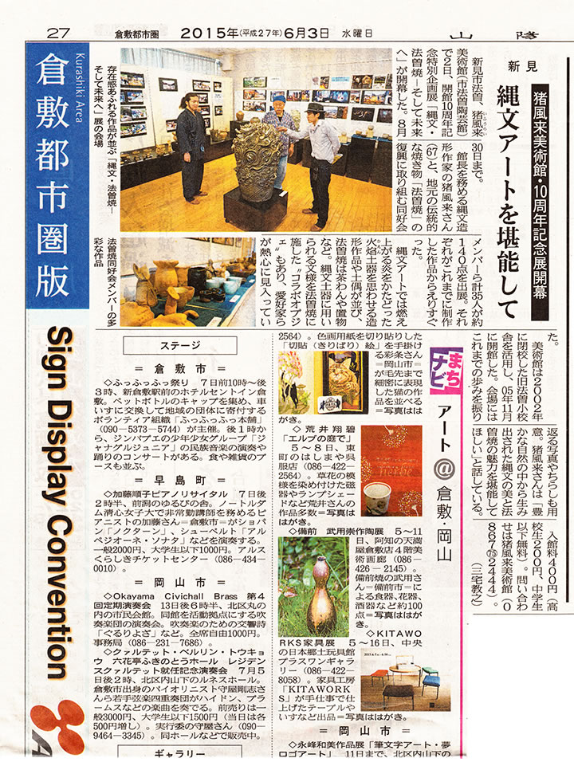

― 過去の企画展（記録） ―
 |
| 【開館10周年記念特別企画展チラシ】 →PDF版を開く |
中国山地の山あいに立ち昇る煙――それは、いにしえの文化を今の世に伝え未来を拓いていく狼煙。
岡山は新見の山間部〈法曽〉の地にある猪風来美術館（新見市法曽陶芸館）。
開館以来10年にわたり現代縄文創作作品の展示とともに、縄文スピリットを伝える陶芸教室や縄文野焼き祭り
を展開してきました。
自然と共生し、生と死と再生への畏怖と祈りの世界観が表現された縄文の造形。
その普遍的な根源力は世界的にも注目され、新世代の縄文アーティストたちを輩出しています。
また一方では地元に伝わる古陶・法曽焼の復興が、法曽焼同好会の絶大な協力のもとに150年ぶりに成し
遂げられました。
地元の土を使った新法曽焼作品は、日常使いの器からアートとしての縄文法曽陶作品まで幅広い可能性を
展開しています。
新たな現代縄文芸術を生み出しその魅力を発信してきた10年を、法曽焼復興の歩みとともに作品や写真で
総覧する特別展です。
ぜひご高覧ください。
=∴=∵=∴=∵=∴=∵=∴=∵=∴=∵=∴=∵=∴=∵=∴=∵=∴=∵=∴=∵=∴=∵=∴=∵=∴=∵=∴=
=∴=∵=∴=∵=∴=∵=∴=∵=∴=∵=∴=∵=∴=∵=∴=∵=∴=∵=∴=∵=∴=∵=∴=∵=∴=∵=∴=
|  |
| 【山陽新聞 2015.06.03】（画像をクリックで拡大します） |

|
| 【備北民報 2015.06.03】（画像をクリックで拡大します） |